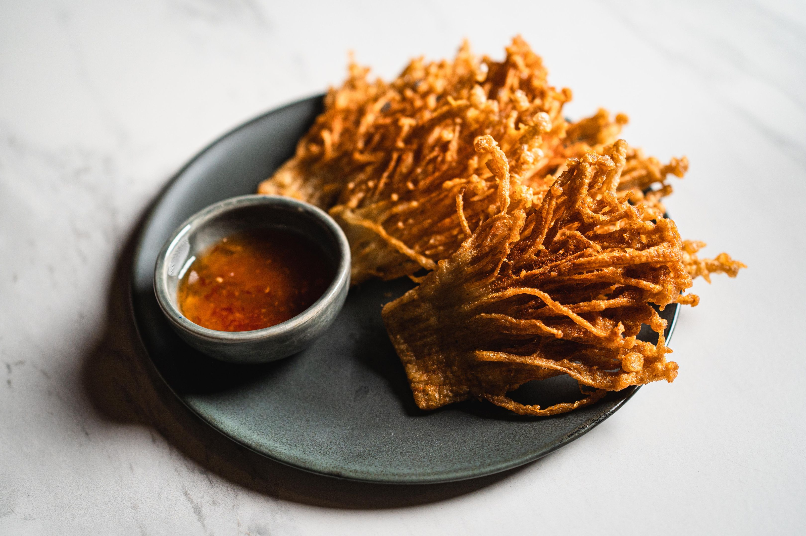

Home
Fried Enoki Mushrooms

Description
The fried enoki mushrooms have conquered the streets of East Asia as well as social media with their crispy nature. These mushrooms occur naturally in
dense clusters with very thin stems and small caps. They are cut to be folded into thin lace sheets and then lightly coated with cornstarch before
being flash-fried to a golden brown color.
The secret of the dish is in the textural change that takes place during cooking: frying in hot oil immediately dries the outside, making it very
crispy, like needles, while retaining some subtle sweetness inside. Usually dusted right out of the oil with spicy cumin, garlic powder, chili flakes,
or Five-Spice—and paired with a creamy dipping sauce like spicy mayo or sweet chili—they offer an airy, savory bite that feels far lighter than
traditional french fries while delivering an immensely satisfying crunch.
Ingredients
Mala Spice Seasoning
- 1 tablespoon Sichuan peppercorns
- 1 teaspoon sweet paprika
- 1 teaspoon cumin seeds
- 1 teaspoon coriander seeds
Fried Mushrooms
- 8 ounce (227 grams) enoki mushrooms
- 1/2 cup (60 grams) all-purpose flour
- 5 tablespoon (40 grams) cornstarch
- 1/2 teaspoon (2 grams) baking powder
- 1/2 teaspoon (3 grams) kosher salt
- 1/4 teaspoon white pepper
- 1/4 teaspoon garlic powder
- Neutral oil (such as vegetable), for deep-frying
- 1/2 teaspoon(3 grams) fine sea salt
Steps
- Make the mala spice seasoning: Place the Sichuan peppercorns, paprika, cumin, and coriander seeds into a medium skillet, and heat on medium-high
for 1 to 2 minutes, until the spices start to pop, or when you see the first signs of smoke from the pan. Transfer the spices to a spice grinder
(or mortar and pestle) and grind until the mixture becomes a fine powder.
- Prepare the mushrooms: Trim off the brownish roots of the enoki mushrooms, then very thinly slice the mushroom bundle lengthwise through the base
into thin slabs.
- In a wide (preferably flat-bottomed) bowl or pie plate, whisk the flour, cornstarch, baking powder, kosher salt, white pepper, garlic powder, and
3/4 cup (180 milliliters) water into a smooth slurry, with no bits of flour remaining.
- Line a sheet pan with paper towels. Pour the oil into a large, high-sided skillet or pot until the oil is 2 inches deep. Place the skillet over
medium heat and heat the oil until it reaches 350°F.
- Working with 2 to 3 slices of mushroom at a time, coat the mushrooms into the batter, lifting to let any excess batter drip off, and gently drop the
mushrooms into the oil. Deep-fry the mushrooms for about 2 minutes, flipping halfway, until the mushrooms are a deep golden color and the tops of
the mushrooms turn crisp and crackly (the batter may remain pale or may take on a bit of color). Remove the mushrooms from the oil with a pair of
chopsticks or tongs onto the prepared sheet pan. Working in batches, repeat with the remaining mushrooms.
- Season the fried mushrooms with fine sea salt and the mala spice seasoning, then serve immediately, with ketchup, mayonnaise, or chile sauce if
using.